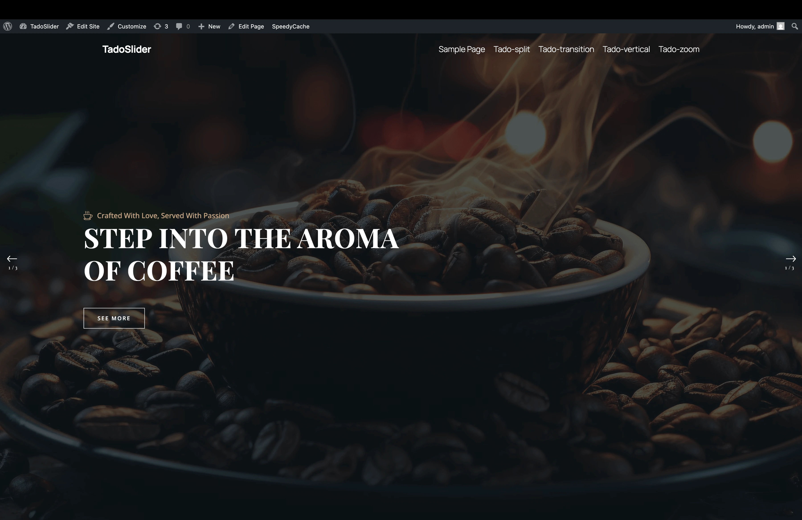
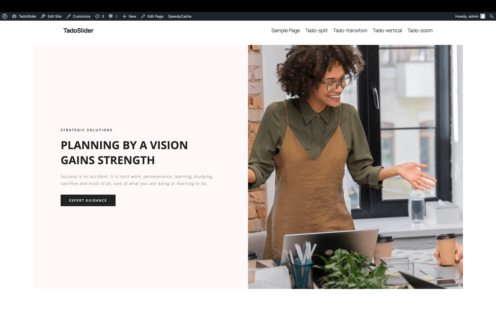
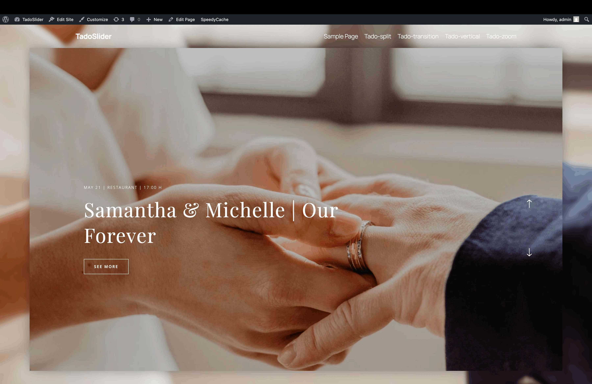
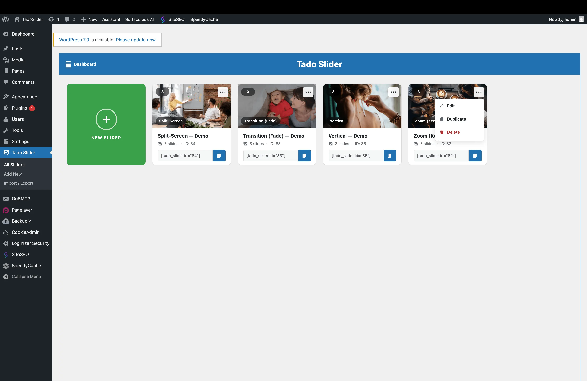
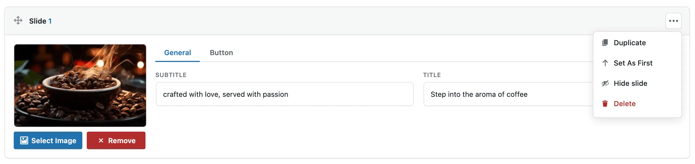
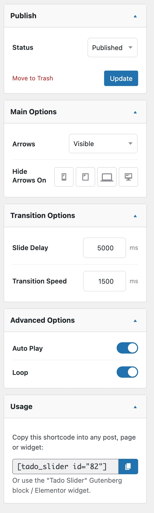

Everything You Need in One Plugin
From cinematic slider types to a polished admin and three integration methods — Tado Slider is built to pass review and delight buyers.
Each one unique

Zoom — Ken Burns
Full-screen slides with a slow, cinematic zoom animation on the active image. Left-aligned typography with an amber-gold subtitle and a Playfair Display headline. Navigation arrows appear on hover at the left and right edges.
- Swiper-powered, autoplay & loop
- Transparent fixed header in hero mode
Transition — Fade Stack
Elegant z-index fade between full-screen images. Left-side text column, right-side description and bottom arrow navigation — perfect for editorial and portfolio presentations.
- Always-on loop for seamless playback
- Adjustable slide delay & transition speed

Split-Screen
Text panel on the left, image panel on the right — the two halves slide in opposite directions with a satisfying split-wipe. Ideal for showcasing products or services with descriptive copy.
- Scroll & swipe driven engine
- Per-slide background colour

Vertical — Swiper
A Swiper-powered card that scrolls vertically with mouse-wheel control. A blurred background image layer behind a crisp foreground card, with up/down arrows — immersive without being overwhelming.
- Mouse-wheel & touch navigation
- Admin-bar height compensation
Fits any workflow
Whichever editor your buyers use, Tado Slider drops right in.
Shortcode
Paste anywhere a shortcode is supported.
[tado_slider id="1"]
Gutenberg Block
Native block with a live server-side preview right in the editor.
Elementor Widget
A dedicated widget for the Elementor editor.
A builder buyers love

Card-grid “All Sliders”
A Smart Slider–style overview replaces the plain WordPress list table. Each card shows a live cross-fading preview, slider type, slide count, ID and a copy-ready shortcode — with Duplicate, Edit and Delete from a 3-dot dropdown.

Drag-and-drop slides
A polished slide manager with a Smart Slider-style thumbnail strip. Each slide has a 3-dot dropdown — Duplicate, Set As First, Hide/Show and Delete — and tabbed fields for General, Button and Style.

Organised sidebar
Settings are split into four focused boxes — Publish, Main Options, Transition Options and Advanced. Controls that don't apply to the selected type are disabled with a clear hint, and Split-Screen shows a full-width warning banner.
Built to pass review
Fully Responsive
Adapts at every breakpoint, with per-device arrow visibility controls.
W3C Valid Markup
Standards-compliant HTML output across all four slider types.
Performance
Assets load only on pages that contain a slider — no global overhead.
Clean, Standard Code
Custom Post Type, nonces, sanitised inputs, escaped output and uninstall cleanup.